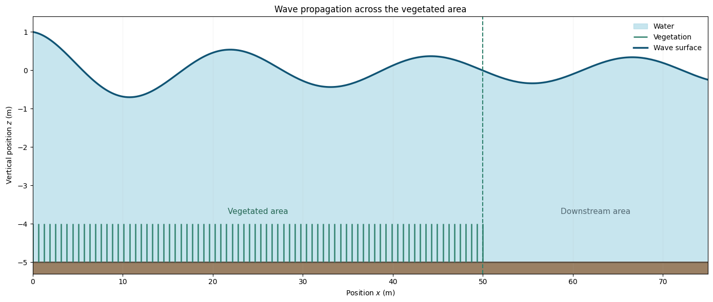

Coastal engineering · Numerical modelling
Pre study of
wave-vegetation interaction

Abstract
This ongoing preliminary study examines how submerged coastal vegetation influences wave propagation. Two cases are currently investigated through a Python numerical model: a regular wave and an irregular sea state. The regular-wave case combines linear wave theory, Morison's equation and a wave-energy balance to predict the progressive attenuation of wave height. The irregular-wave case extends this approach by decomposing the sea state into spectral components and propagating their amplitudes through successive vegetated sections.
The current PDF report covers the regular-wave case only. The irregular-wave analysis is still under development and will be included in a future revision. The commented Python script and complete Jupyter notebook remain available below for readers who wish to examine the modelling approach and follow its development.
The study supports an application for a PhD scholarship on wave-vegetation interactions at DTU. Its purpose is to demonstrate the ability to select suitable physical models, handle coupled equations and develop a numerical methodology for this type of problem. The work is still in progress: the model is preliminary and not yet fully validated, and its assumptions, implementation and results may evolve as the study develops.
Complete Jupyter notebook
Python model
All cells, comments and saved outputs are reproduced below in their original order.